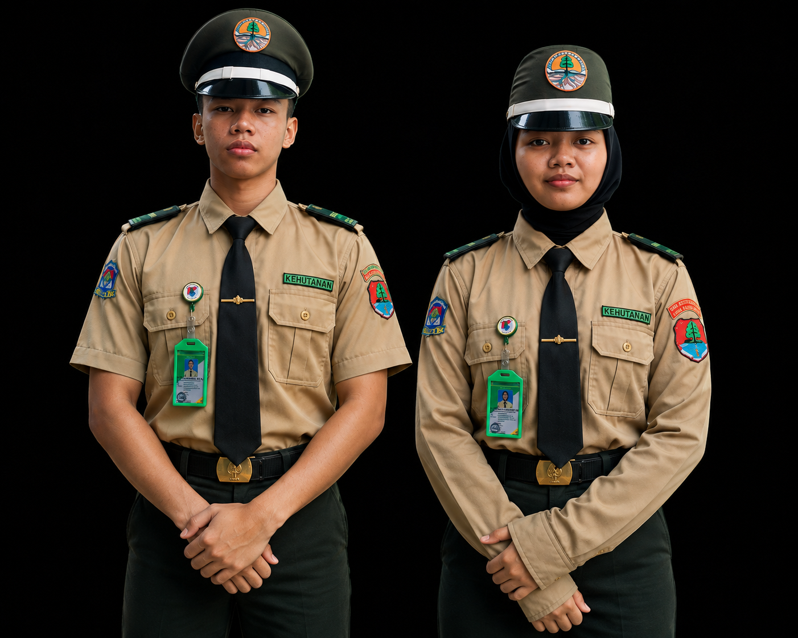
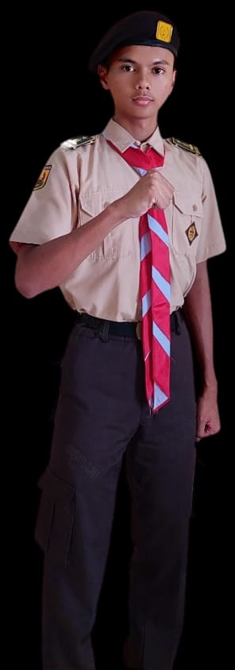
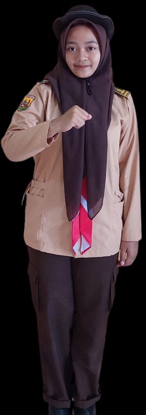
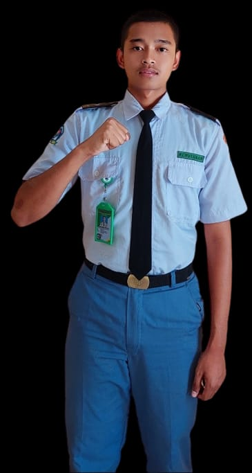
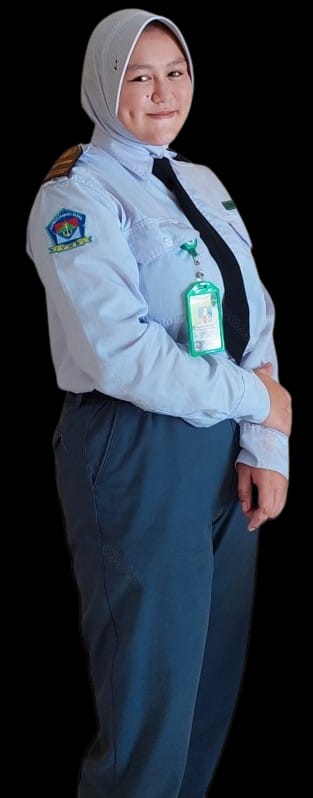

Seragam Kebesaran Kehutanan
Dokumentasi seragam kebesaran kehutanan putra dan putri.
SMK Kehutanan Rimba Bahari Sumedang hadir sebagai lembaga pendidikan yang mengembangkan kompetensi, karakter, dan wawasan kehutanan bagi generasi rimbawan muda.
Website resmi sekolah menjadi pintu informasi untuk mengenal identitas sekolah, visi dan misi, kompetensi kehutanan, kegiatan, SPMB, serta layanan digital sekolah.
Terwujudnya SMK Kehutanan Rimba Bahari Sumedang sebagai lembaga pendidikan yang berbasis kompetensi dalam bidang agribisnis dan agroteknologi yang ditunjang oleh teknologi informasi kehutanan.
Berikut merupakan seragam yang digunakan siswa SMK Kehutanan Rimba Bahari Sumedang. Foto ditampilkan menggunakan dokumentasi yang telah ditetapkan sekolah.

Dokumentasi seragam kebesaran kehutanan putra dan putri.

Seragam Pramuka siswa putra.

Seragam Pramuka siswa putri.

Seragam sekolah siswa putra.

Seragam sekolah siswa putri.